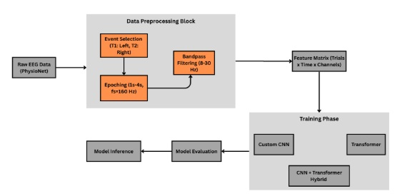

Hi, I'm Rahisha Pokharel — a passionate Project Manager and IT professional with over 4 years of experience delivering impactful technology solutions. I combine strategic thinking, team leadership, and user-centered design to turn ideas into real results. Dive in to see my work, research, and reflections.
About Me
Originally from Nepal, I am a Project Manager and IT professional with over four years of experience leading and supporting projects across IT systems, web design, content development, and UI/UX design. My career has afforded me the opportunity to study and work in multiple countries, including India, Sweden, and the United States. This multicultural exposure has enriched my perspective on technology, collaboration, and user-centered solutions.
In terms of technology, I'm particularly interested in how artificial intelligence is being used in medicine, looking for creative ways to combine modern technologies with improvements in healthcare.
Outside of my professional work, I enjoy hiking, photography, and immersing myself in new cultures through travel—passions that fuel my creativity and adaptability in both life and work.
Projects
Neural Signal Decoding for Motor Imagery

It is very challenging to develop effective brain computer interfaces (BCIs) to decode human intentions from brain activity. While we can see many studies that have focused on language-related neural signals, the brain also processes information through non-linguistic stimuli, such as motor actions and visual inputs.
This study primarily investigates decoding motor intention, more specific to imagined or executed limb movement using electroencephalography (EEG) data from the PhysioNet Motor Movement/Imagery Dataset (EEGMMIDB). First of all, EEG signals were preprocessed with band-pass filtering, segmented into epochs, and classified using machine learning models. Our method uses two different models, Convolutional Neural Networks (CNNs) to capture local spatial features and Transformer-based architectures to model long-range temporal dependencies. In addition, we extract spatial-spectral-temporal features to enhance classification performance. Using two different models, CNNs and Transformer, Accuracy, left/right hand precision and f1-scores were calculated to evaluate the performance. We are able to achieve around 61% accuracy in both architectures. These findings could be contributing to the growing field of neural decoding and support the development of assistive technologies and neurorehabilitation tools.
Facial Expression Recognition System
A significant subject in the field of Computer Vision and Artificial Intelligence is outward appearance acknowledgment. There are two mode of correspondence one is verbal and another is non-verbal. Among verbal and non-verbal methods for correspondence, outward appearance is non-verbal methods for correspondence, outward appearance is non-verbal methods for correspondence.
Outward appearance assumes a crucial job which encourages human to communicate their feelings, express their emotions, psychological wellness, viewpoint and so on. Understanding gets simpler when human and computer interact with each other if computer can react to non-verbal correspondence of human which is only feelings communicated. In this paper, a calculation is introduced for object discovery dependent on Viola-Jones Algorithm. In this paper, there are introduced the consequences of acknowledgment of seven emotion states (neutral, happy, sad, fear, disgust, fear, surprised) in view of outward appearances. The grouping of the highlights was performed utilizing managed learning strategy i.e Convolutional Neural Network(CNN).
Personalized Movie Recommendation System
In the digital world of today, where there is an infinite amount of content to consume, including movies, books, videos, articles, and so on, finding content that appeals to one's tastes has become challenging. On the other hand, providers of digital content want to keep as many people using their service for as long as possible. This is where the recommender system comes into play, where content providers suggest content to users based on their preferences. Web applications that offer a variety of services and automatically suggest some services based on user interest increasingly rely on recommendation systems.
Different business services each play a significant role in the success of the current marketing field. The personalize recommendation technique is one of the most valuable tools for providing personalized service on websites. When it comes to e-Commerce's online marketing efforts, this strategy is extremely useful. To build the proposal framework, the cooperative sifting is exceptionally helpful advances in the field of recommender frameworks. The accuracy of recommendation engines is the source of many issues in today's web. Therefore, a variety of strategies are utilized to enhance the recommendation system's diversity and accuracy. When generating recommendations, the fundamental recommender systems typically take one of the following into account: The Content-Based Filtering, which is based on the user's preferences, it describes things, and we use keywords other than the user's profile to show what the user likes and dislikes. To put it another way, CBF algorithms suggest products that people have liked in the past or products that are similar to them. It looks at what you've liked in the past and suggests the best match, Or a collaborative filtering system makes recommendations for items based on how similar users and/or items are measured. The CF system only suggests products that are popular with similar types of users. The development of a movie recommendation system with category-based recommendations, more precise results, increased efficiency, and overcoming the cold start are the goals of this system.
Blog
Decoding Emotions: Understanding Facial Expression Recognition Systems
In today’s rapidly evolving digital landscape, machines are not just learning to process what we say—they’re beginning to understand how we feel. One of the most fascinating technologies driving this shift is the Facial Expression Recognition (FER) system. This innovative form of artificial intelligence enables computers to analyze human facial expressions and interpret emotional states, bringing a new level of depth to human-computer interaction.
A facial expression recognition system is designed to identify emotions by analyzing the features and movements of a person’s face. By detecting facial landmarks such as the eyes, eyebrows, nose, and mouth, the system can recognize common expressions linked to emotions like happiness, sadness, anger, surprise, fear, and disgust. These systems typically follow a three-step process: face detection, feature extraction, and expression classification. First, the face is detected within an image or video frame. Then, the system extracts key features, often using geometric or appearance-based techniques. Finally, machine learning or deep learning models classify the expression into an emotional category.
Under the hood, facial expression recognition relies on a combination of computer vision and artificial intelligence. During preprocessing, the system may normalize images or adjust lighting to ensure consistency. Detection algorithms like Haar cascades, Dlib, or MTCNN are used to locate and align faces. Feature extraction is then performed, often using convolutional neural networks (CNNs), which analyze facial structures and patterns. These features are passed to classifiers—such as Softmax layers or support vector machines (SVMs)—to determine the emotion being expressed. Many modern systems are built using powerful frameworks like TensorFlow or PyTorch and use pre-trained models trained on large datasets such as FER-2013 or AffectNet.
Facial expression recognition is already making a significant impact across various industries. In healthcare, it can monitor patient emotions and detect signs of mental health issues. In education, FER systems help assess student engagement in remote learning environments. Retailers use it to understand customer satisfaction by analyzing shopper expressions. Security systems may use FER to identify suspicious behavior in public areas. In entertainment and gaming, it enhances immersion by making virtual characters more responsive to player emotions.
However, this technology is not without its challenges. Human expressions are highly variable and can differ significantly based on culture, individual behavior, or context. External factors such as lighting, occlusion by objects (like glasses or face masks), and camera angles can affect the system’s accuracy. There are also ethical concerns, particularly related to bias in training data and the potential for misuse in surveillance. Moreover, privacy issues arise when FER systems are deployed without clear consent or transparency.
Looking ahead, the future of facial expression recognition holds exciting possibilities. As AI models become more sophisticated, FER systems will likely become more accurate, adaptive, and capable of recognizing more subtle or mixed emotions. They will also become increasingly embedded in our daily lives—improving everything from digital assistants to therapeutic tools. However, to fully realize this potential, developers and organizations must prioritize ethical considerations, fairness, and data protection.
In conclusion, facial expression recognition systems represent a remarkable step forward in emotional AI. By teaching machines to recognize human emotions, we’re not just building smarter systems—we’re creating more empathetic ones. With thoughtful development and responsible deployment, FER technology could play a transformative role in shaping the future of human-centered technology.
Securing Mechanism of Healthcare Data on Cloud
As the healthcare industry continues its digital transformation, cloud computing has emerged as a key enabler of modern healthcare delivery. From storing electronic health records (EHRs) to supporting telemedicine platforms and advanced analytics, the cloud offers scalability, accessibility, and operational efficiency that traditional on-premise systems struggle to match. However, this shift also raises a critical concern: how can we ensure the security and privacy of sensitive healthcare data in a cloud environment?
Healthcare data is among the most sensitive and valuable types of personal information. It includes not only demographic data but also medical histories, diagnoses, prescriptions, and payment details. Because of this, it is a prime target for cybercriminals. Ransomware attacks, data breaches, and unauthorized access can lead to identity theft, insurance fraud, and even blackmail. Moreover, healthcare data is subject to strict regulatory requirements—such as HIPAA in the United States, GDPR in Europe, and various local regulations—that impose heavy penalties for non-compliance.
To address these challenges, healthcare organizations must implement a multi-layered security approach when using cloud services. One of the foundational elements of cloud data protection is encryption. Data should be encrypted both in transit and at rest using strong, industry-standard algorithms such as AES-256. This ensures that even if data is intercepted or accessed by unauthorized individuals, it remains unreadable and unusable.
Another crucial component is access control. Organizations must implement robust identity and access management (IAM) systems that restrict access to data based on user roles and responsibilities. Techniques like role-based access control (RBAC), multi-factor authentication (MFA), and single sign-on (SSO) can help ensure that only authorized personnel can access specific data sets. In addition, healthcare providers should continuously monitor user activity through logging and audit trails to detect unusual patterns or suspicious access attempts.
Data masking and anonymization also play a key role, especially when patient data is used for research or analytics. By removing or obfuscating identifiable information, organizations can reduce the risk of data exposure while still deriving valuable insights. At the application layer, secure coding practices and API protection mechanisms must be enforced to prevent common web-based attacks, such as SQL injection or cross-site scripting.
Equally important is a comprehensive disaster recovery and business continuity plan. Healthcare providers must ensure that they have secure backups and can recover critical data quickly in the event of an outage, cyberattack, or natural disaster. Using geographically distributed data centers and automated failover systems can significantly improve resilience.
All these measures must be aligned with industry standards and legal frameworks. Compliance with regulations like HIPAA, GDPR, ISO/IEC 27001, and the NIST cybersecurity framework not only strengthens data security but also helps build trust with patients and partners. It's also important to understand the shared responsibility model in cloud computing. While cloud service providers are responsible for securing the infrastructure, the healthcare organization remains responsible for securing its data, applications, and user access. Clarity in roles and responsibilities is essential to avoid security blind spots.
Looking ahead, emerging technologies such as Zero Trust Architecture, homomorphic encryption, blockchain for data integrity, and AI-driven threat detection are beginning to transform how healthcare data is protected in the cloud. These tools promise even greater levels of security while enabling innovation and seamless user experience.
In conclusion, the migration of healthcare data to the cloud offers tremendous benefits, but it must be matched by a rigorous and dynamic security strategy. Protecting patient information is not just about technology—it's about preserving trust, ensuring compliance, and ultimately safeguarding lives. By investing in strong security mechanisms and fostering a culture of privacy and responsibility, healthcare organizations can fully realize the potential of cloud computing without compromising on data protection.
Publications
Comparative Study of Various Classifiers on Hypothyroid Data Using WEKA
Presented at the Research Symposium on Advancements in Engineering.